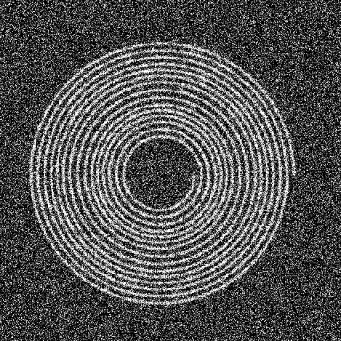
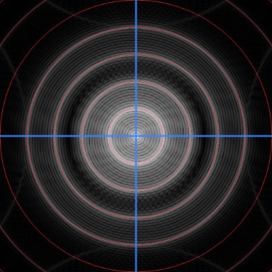
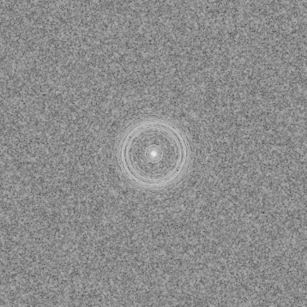

Estimating the ring spacing of a spiral: procedure
How the ring-spacing experiment goes from an
image of a spiral to a robust estimate of its ring spacing (and, along the way,
its center): every step, its parameters, what was tried, and how well it works.
For what each control on the page does, see Explain
controls. Source: github.com/adamfinkelstein/spiral.
In one paragraph. Find a rough center from image gradients (RANSAC
over pairs of gradient lines, corrected for the spiral's sideways offset,
with the image blurred along the rings to resist noise). Weight the image by
1/√r about that center so outer turns don't dominate. Take the 2D
Fourier transform and its radial profile. Score each candidate spacing by how
well its harmonics stand above the troughs between them, searching only
×0.5–2 of the nominal spacing and refining coarse to fine, from
broad bands down to the expected spacing variation. Precision: about
0.3–0.7% when the spiral is perfect, even with heavy noise; about
0.5–2.5% when the local spacing varies by up to ±15–30%.
0. Inputs and assumptions
Input
Meaning
Image
512×512 grey image, bright spiral on dark. The center can be anywhere (sub-pixel) and is not given.
Nominal spacing s0
The device's target ring spacing. The true spacing is assumed to be within ×0.5–2 of it. (In the app the true spacing stands in for it.)
Expected variation v
How much the local spacing may vary along the spiral (device tolerance), default ±10%.
Spiral sense
Which way the spiral winds, needed for the sideways-offset correction in step 1.
The model is an Archimedean spiral r = bθ with b = spacing / 2π
(the radius grows by one spacing per turn). b appears throughout: it is also the
sideways offset that makes a spiral differ from circles (step 1).
Test images
The app renders the spiral per pixel (not with canvas strokes), from the
distance to the nearest arm, with smooth Gaussian (erf) edges: sharp edges
contain frequencies the 512 grid can't represent, which alias into false arcs
in the Fourier transform; a 2–3 px edge transition removes them. To
test robustness it can also add:
Radius offsets: a real spiral is never perfect. The curve becomes
r(θ) = bθ + δ(θ), δ piecewise linear in θ with
knots at 20/40/60/80% of the way from start to end radius (in units of
spacing, −1..1) and 0 at both ends. The curve stays continuous with kinks in
slope, and the average spacing over θ is still exactly the nominal one.
The local spacing changes by the difference between neighbouring knots, spread
over 20% of θ (about 3 turns at spacing 10, 1.5 turns at spacing 20), so
the same offsets distort a spiral with fewer turns more.
Noise: Gaussian noise, σ in units of full white (0–1.5 tested).
Aspect (non-circular drawing), blur, line width, hard edges, and concentric rings instead of a spiral.
The same with offsets 0.25, −0.25, 0.2, −0.1: local spacing varies by up to about ±17%.

…plus noise σ 0.6. This is the running example below.
1. Rough center from gradient lines
The spacing itself doesn't need the center (the Fourier magnitude ignores
where the spiral is), but step 2 weights turns by their radius, so it needs the
center to within a pixel or so. A centroid of bright pixels would be biased
whenever some angles are brighter or missing. Instead, every pixel on a ring's
edge has a gradient pointing across the ring, so the line through it along the
gradient passes (nearly) through the center; the center is where most lines
meet.
Blur and gradients. Gaussian blur σ 1 px, then Sobel gradients everywhere.
Choose lines. Lines are undirected, so each falls in one of 64
orientation bins over 180°. Keep in each bin the 150 strongest pixels above a
global floor (the 70th percentile of gradient magnitude). Every orientation
gets an equal say, while orientations with no real edges stay nearly empty
instead of filling with noise. Weight = magnitude − floor. (Keeping a
fixed top percentage instead was tried first; it ties the count to image size
and lets noise fill it.)
Spiral correction. On a spiral, the normal at a point at angle
α misses the center by b sideways: it passes through
center + b·(−sin α, cos α) (exactly
b(r²+b²)/(r²+2b²); radially only ≈ b²/r). For a candidate
center, each line is shifted back by that amount (no trigonometry needed: the
direction comes from the pixel's offset from the candidate). Rings need no
correction.
RANSAC over pairs of lines. Draw a line with probability ∝ its
weight, and a partner from an orientation bin chosen with probability ∝
(lines in the bin) · sin²(angle between the bins): an
intersection's error grows like 1/sin of the angle, so near-perpendicular
pairs are favoured. Their (corrected) intersection is a candidate center,
scored by Σ w·min(d², ε²) over a fixed random subset of
lines (d = corrected distance, ε = 2 px). 600 candidates scored
against 1500 lines.
Refine. Weighted least-squares intersection of the inlier lines
(d < ε), recomputing inliers and corrections three times.
Tangential blur rounds. Blur the image along circles about the
current center (Gaussian σ 3 px along the local tangent, bilinear samples;
shorter near the center), recompute lines and center (150 candidates, 1000
scoring lines, since it starts close), and repeat until the center moves less
than 1 px, at most 3 rounds. Blurring along the rings averages noise
away without smearing across them; ~1 px accuracy is plenty for step 2.
Input (noise 0.6).After the last tangential blur. Green pixels: inlier lines; green +: estimate; red circle: true center (3.2 px apart here, after 3 rounds).
Case (off-center spirals)
No tangential blur
Tangential blur 3 px
No noise (spacing 10 / 20)
0.03–0.08 px
0.04–0.06 px
Noise 0.3
3–8 px
0.5–0.8 px
Noise 0.6
6–8 px
~2.2 px
Noise 1.0
18–36 px
2.3–3.8 px
Medians over 3 positions. The sideways correction matters most with few
turns: at spacing 20 it took the clean error from 0.27 to 0.03 px. A
non-circular drawing (aspect 1.02) is the hardest case (~2 px), since its
lines no longer meet at one point. RANSAC alone was about as accurate as the
Hough-style vote it replaced; the tangential blur did most of the work under
noise. Cost: ~60 ms blur + ~40 ms lines + ~12 ms RANSAC per later round.
2. Weight the turns
In the Fourier transform each turn contributes in proportion to its length,
which grows with r, so outer turns dominate. The magnitude spectrum can't tell
inner from outer turns (that information is in the phase), so the weighting
has to happen in the image, before the transform, about the center from step
1. Multiply each pixel by
w(r) = max(r, 2s0)−½,
normalized to mean 1
The cap near the center avoids amplifying noise where there are no rings.
The noisy example weighted by 1/√r (displayed darker).
Spacing, offsets (advanced search, 10%)
by length (none)
1/√r
1/r (equal turns)
10, ±0.1
0.37 / 0.9
0.75 / 1.3
0.87 / 1.8
10, ±0.25
0.80 / 1.4
0.48 / 1.8
1.20 / 2.4
10, ±0.5
2.5 / 14.6
2.4 / 8.2
3.5 / 9.6
20, ±0.1
0.42 / 0.9
0.63 / 1.4
1.57 / 2.3
20, ±0.25
2.5 / 11.6
2.4 / 4.0
1.8 / 8.0
20, ±0.25, noise 0.3
2.6 / 10.9
2.2 / 3.7
1.0 / 5.5
Median / max % error over 10 random offset sets. 1/r over-weights the
short inner turns (fewer pixels, broader and noisier peaks); 1/√r keeps the
medians close to unweighted and cuts the worst cases about 3×. Results
with the estimated center were identical to those with the true center.
3. Fourier transform and radial profile
Subtract the image mean (removes the bright zero-frequency spot), apply a
Hann window (fades to black at the borders; removes cross-shaped streaks from
the transform treating the image as periodic), take the 512×512 FFT.
L(u,v) = log(1 + |F|), divided by its largest value away from zero frequency.
Radial profile: assign each FFT pixel to the bin round(distance from zero
frequency) and average:
P(r) = (1/nr) ∑ L(u,v) over round(√(u²+v²)) = r
Only radii up to 256 are used (beyond, the bins cover only the corners).
Smooth P with a Gaussian of 1.5 bins (removes speckle and the fringes from
the spiral's start and end radii; cut rms error for rings about 3×;
3 bins merged the peaks of large spacings).
Where the peaks are
A point at radius ρ in the transform is a pattern repeating ρ times
across the 512 px image, so rings spaced s px apart put their main
peak at ρ1 = 512 / s, and, because each line is a
narrow band rather than a smooth wave, fainter harmonics at
kρ1 (51.2, 102.4, 153.6, … for spacing 10).

log |FFT| of the clean spiral, with red circles at the expected harmonics.

log |FFT| of the weighted noisy example: noise adds a flat floor, the rings still stand out near the center.
Clean spiral. White: radial profile P; peaks at the harmonics (red dashed; the outer dashed pair also marks the search range ×0.5–2). Red: the final-stage score S(ρ). Purple bar: the estimate on a 0–64 px scale.
4. Harmonic-sum score
For each candidate first-peak radius ρ, measure how far the profile at
each multiple stands above the points halfway to its neighbours:
Only the true ρ1 scores high. There every term is a
peak minus two troughs. At ρ1/2 every other term samples a trough;
at 2ρ1 the halfway points land on peaks.
Subtracting the halfway points removes the slowly falling
background.
Dividing by √K (K = number of multiples used): an average let a
multiple of ρ1 hitting one or two strong harmonics win; a plain sum
let tiny ρ win by piling up ripples.
Candidates in steps of 0.05; the best sample is refined by a parabola
through it and its neighbours, ρ* = ρi + 0.05·½(Si−1−Si+1)/(Si−1−2Si+Si+1),
and the spacing is s* = 512 / ρ*.
This single sharp stage (the app with "Advanced peak search" off) gets a
perfect spiral within ~0.06% (0.2–0.5% over many shapes), but fails badly
once the local spacing varies: rings at several spacings smear each harmonic
into a band, and the score jumps to a wrong peak (errors ~70%).
5. Advanced peak search
Restricted range. Search only ρ for spacings within
×0.5–2 of s0. This alone removes the catastrophic
wrong-peak failures. (Narrower windows, ×0.8–1.25 or
×0.9–1.1, only cap the error by construction: the answer then sits
on the window's edge and reflects the assumption more than the data.)
Broadened bands on a log scale. If the spacing varies within
±v, harmonic k becomes a band of relative width ±v around kρ1,
so higher harmonics blur more. On a log-radius axis every band has the same
width, so one Gaussian smoothing (σ = v/2 in log ρ) broadens all harmonics
consistently: the score compares bands instead of points.
Only well-separated harmonics. Use harmonics k ≤ 1/(4v); beyond that
the bands of neighbouring harmonics overlap and the troughs vanish.
Coarse to fine. Start at v = max(0.3, 3·vexpected), find the
best ρ, then halve v and search only within ±v of the previous answer.
Stop at the expected variation (default 10%) instead of refining to
sharp peaks: when the spacing really varies there is no single sharp peak, and
each sharper stage locks onto one region's spacing instead of the average.
(Example, spacing 20 with offsets ±0.25: 0.9% error at v = 0.3, 9.9% at v = 0.)
At vexpected = 0 it refines all the way, for a perfect spiral.
Edge warning if the answer lies on the edge of the ×0.5–2 range.
It rarely fires: failures usually land on a strong local peak inside the range.
Running example (offsets, noise 0.6, 1/√r): coarse to fine 10.12 → 9.92 → 9.87 px (stages v = 0.3, 0.15, 0.1); the true average spacing is 10. Dashed lines: the search range.
Spiral, offsets (local variation)
Single sharp stage
Advanced, 10%
Spacing 10, none
0.06 / 0.1
0.45 / 0.5
Spacing 10, ±0.25 (≈±17%)
1.5 / 5.2
0.75 / 1.6
Spacing 10, ±0.5 (≈±33%)
13 / 43
2.0 / 14
Spacing 20, ±0.1 (≈±13%)
2.1 / 70
0.55 / 1.1
Spacing 20, ±0.25 (≈±33%)
70 / 71
2.5 / 12
Spacing 20, ±0.5 (≈±67%)
70 / 70
16 / 50
Median / max % error over 10 random offset sets, without turn weighting.
6. Parameters
Step
Parameter
Default
Explored / notes
1
Pre-blur
σ 1 px
σ ≈ 2 helped under noise before the tangential blur existed
uniform pairs with a 30° cutoff tried first; 600 × 3000 in every round made RANSAC 18× slower
1
Tangential blur
σ 3 px
0 (off), 2, 3, 5
1
Rounds / stop
≤ 3, < 1 px
5 rounds and 0.05 px: no better under noise, the estimate jitters ~1 px
2
Turn weighting
1/√r, capped at 2s0
none, 1/√r, 1/r
3
Mean subtraction, Hann window
on
3
Profile smoothing
1.5 bins
0, 1.5, 3
4
Candidate step
0.05 bins
+ parabolic refinement
5
Search range
×0.5–2 of s0
none, ×0.8–1.25, ×0.9–1.1
5
Expected variation
10%
0, 5, 10, 15%; starting v 0.1–0.4
7. How well it works, and limits
Condition (full pipeline)
Spacing error, median / max
Perfect spiral, any noise up to 1.5 (radius 50–200 or 30–100, spacing 10 or 20)
0.1–0.7% / ≤ 2%
Local spacing varying up to ≈±15%
0.5–0.8% / ≤ 1.8%
Local spacing varying ≈±30%
2.2–2.4% / 3.7–8%
Local spacing varying ≈±67%
~16% / 35% (unreliable)
Noise is not the limit. White noise spreads evenly over all frequencies
and the radial profile averages thousands of FFT pixels per radius, so the
spacing estimate stays within ~1–2% even at noise 1.5. Noise mainly
affects the center (step 1), which only needs ~1 px.
Varying spacing is the limit. The transform sees a mixture of local
spacings; beyond about ±30% there is no single peak, and even the target
(the average spacing) is ill defined: the Fourier transform's own
pixel-weighted mean spacing then differs from the θ-average.
Non-circular drawings (aspect) make the rings elliptical, smearing the
peaks and confusing the center.
Tried and not kept
Refining to sharp peaks (v = 0) when the spacing varies (locks onto one region).
Narrow search windows (answer sits on the edge).
1/r turn weighting (over-weights short inner turns).
Tangential blur on the Fourier input: differences within ±0.2 percentage
points either way; the transform is already noise-tolerant.
Center from the centroid of bright pixels (biased by uneven brightness over angles).
Keeping a fixed top percentage of gradient pixels (count tied to image size; noise fills it).
Hough voting on a grid (replaced by RANSAC: grid-free and sub-pixel, similar accuracy).
Not yet tried
Estimating the spacing separately in radius bands or wedges and combining
them robustly; this would also measure how much the spacing varies, which
could set the expected variation automatically.
Correcting for a non-circular drawing (fitting an ellipse to the rings).